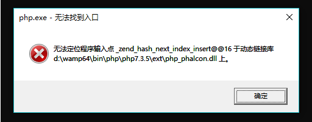
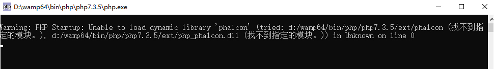

公司使用PHP的Phalcon框架做后端。Phalcon最大的特点就是底层由C语言实现，使用Phalcon框架必须要安装php_phalcon.dll扩展。之前的是使用PHP7.2的版本，后面考虑性能和开发效率的问题，升级到PHP7.3。本地开发环境PHP升级很方便，将版本切换一下即可。然后就出现了如下报错。

百度之后，发现相关的资料很少，而且质量很差，基本没办法解决我的问题。
为了排除其他因素，我对php.ini文件的extension进行了测试，最后确定就是php_phalcon.dll这个扩展的问题。
为了查看是不是安装步骤的错误，我重新去看了Phalcon的文档，根据文档的指引找到了Phalcon在github上的release，才发现php_phalcon.dll是需要针对不同版本使用不同的dll文件的。
重新下载了适配PHP7.3的dll文件，包括nts版本和非nts版本，PC适配的是非nts版本，如果使用nts版本安装会出现如下报错。

附上github地址：https://github.com/phalcon/cphalcon/releases/tag/v3.4.4
Phalcon文档地址：https://docs.phalconphp.com/3.4/zh-cn/